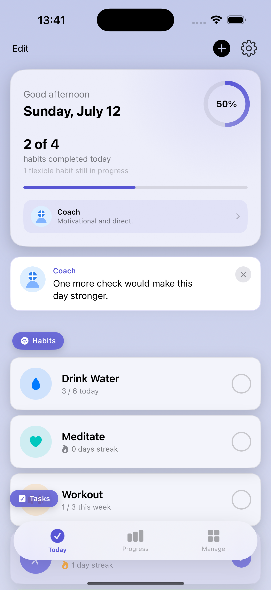
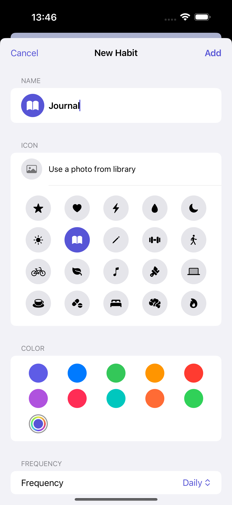
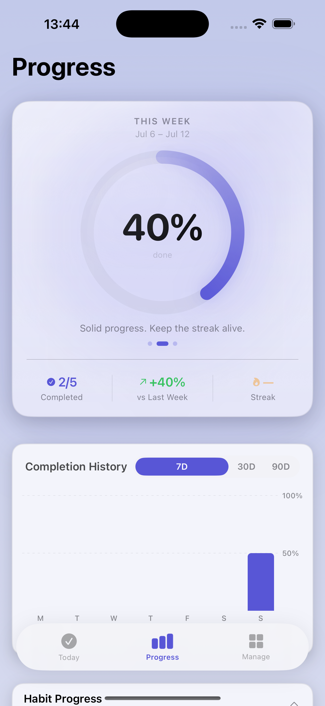
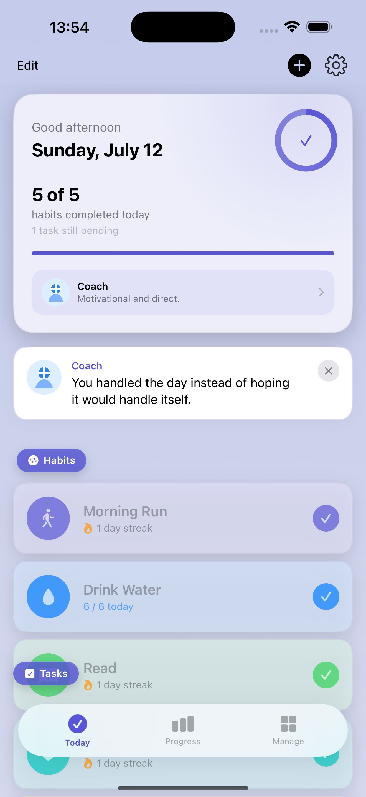
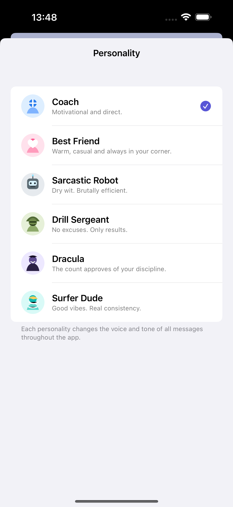

Know what matters today
A focused Today screen brings due habits and timely tasks together, with clear completion counts and flexible habits kept in context.
Focused habit tracking for iPhone
SteadKeep gives each day a clear shape—with flexible habit schedules, useful reminders, honest streaks and progress, and widgets that keep the next step close.

One calm place for
Built around the day in front of you
See what is due, check it off, and understand how your consistency is changing—without turning a habit list into a second job.



A focused Today screen brings due habits and timely tasks together, with clear completion counts and flexible habits kept in context.
Track current and best streaks, review completion history, and see progress across today, the week, and the month.
Set per-habit reminders that respect your schedule. Once a habit’s period is complete, its remaining reminder is cleared.
Small and medium Home Screen widgets show today’s progress and what is up next, without opening the app.
How it works
SteadKeep stays practical: define the habit, act on today, then use your history to adjust.
Choose a name, icon, color, target, frequency, and a fixed or flexible schedule.
See what is active, log each completion, and let reminders help at the right time.
Review streaks and completion patterns, then keep the routine that is working.
Motivation, in your tone
SteadKeep’s personality options change the tone of messages throughout the app—from direct coaching to warmer encouragement, dry wit, or high-energy accountability.

Free & Premium
Use the core app free, then unlock the full experience with one purchase—no subscription.
Free
Premium
One-time purchasePremium is a single non-consumable App Store purchase. Restore Purchases is included.
Privacy, stated carefully
Your habits and tasks stay on your devices and sync through your private iCloud database. SteadKeep has no accounts, ads, analytics, or third-party tracking.
Read the Privacy PolicyFAQ
SteadKeep supports iPhone devices running iOS 17 or later.
Yes. SteadKeep supports daily, weekdays, weekends, weekly, monthly, and yearly habits, including fixed and flexible scheduling options.
Yes. Small and medium Home Screen widgets show habit progress, with the medium widget also able to show what is up next.
Yes. The app includes a Restore Purchases action for its non-consumable Premium purchase. See the support page if it does not appear immediately.
This website is for the iPhone app. An Android project exists in development, but availability is not claimed here.
One day at a time
Make the next habit clear, check it off, and come back tomorrow.